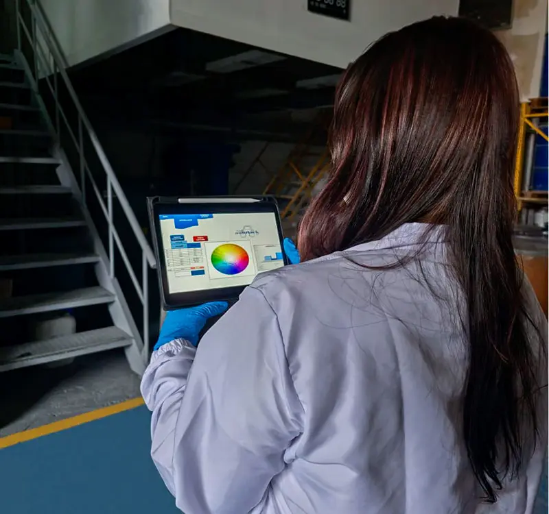
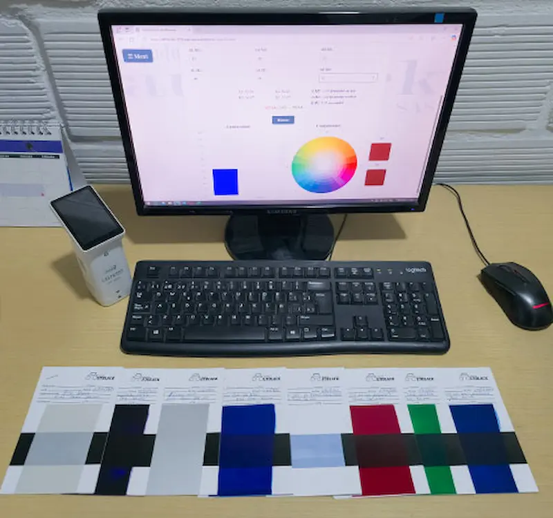
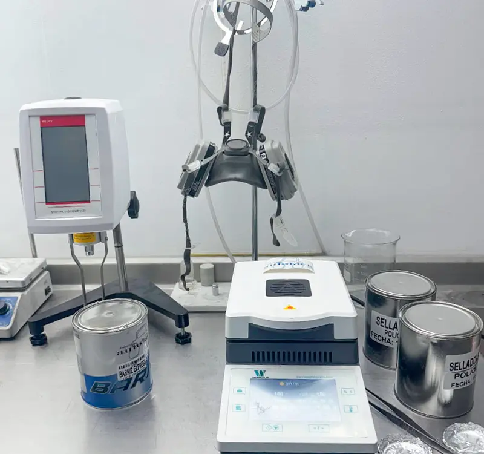

Políticas de Calidad
En Industrias Autolack S.A.S., con 12 años de experiencia en Medellín, estamos firmemente comprometidos con la satisfacción de nuestros clientes a nivel nacional, abarcando tanto el sector de la industria como el automotriz, a través de la fabricación y comercialización de productos de alta calidad que superen sus expectativas. Buscamos la excelencia en cada uno de nuestros productos mediante la selección de materias primas de primera, procesos optimizados y un equipo humano capacitado, impulsando una cultura de mejora continua y cumpliendo con las normativas vigentes para consolidarnos como un proveedor confiable y estratégico en el mercado colombiano.

Misión
Somos una empresa colombiana nacida en el 2013, dedicada a la fabricación y comercialización de soluciones integrales de alta calidad para la repintura automotriz y la industria. Desde nuestra base en Medellín, nos comprometemos a satisfacer las necesidades de nuestros clientes a nivel nacional, ofreciendo productos innovadores, un servicio técnico especializado y una asesoría personalizada. Buscamos contribuir al crecimiento y profesionalización del sector automotriz colombiano, fomentando prácticas sostenibles y construyendo relaciones de confianza a largo plazo con nuestros aliados.

Visión
Para el año 2030, Industrias Autolack S.A.S será una de las grandes referentes a nivel nacional en el sector de la repintura automotriz y la industria. Seremos reconocidos por nuestra calidad superior y precio competitivo en el mercado. También, seremos reconocidos por nuestro compromiso con la excelencia en el servicio al cliente. Aspiramos a expandir nuestra presencia y fortalecer nuestro catálogo, al tiempo, mejorar nuestras alianzas estratégicas en todo el territorio colombiano , siendo la primera opción para talleres y profesionales del sector, contribuyendo así al desarrollo y la imagen del sector automotriz y la industria en Colombia.
